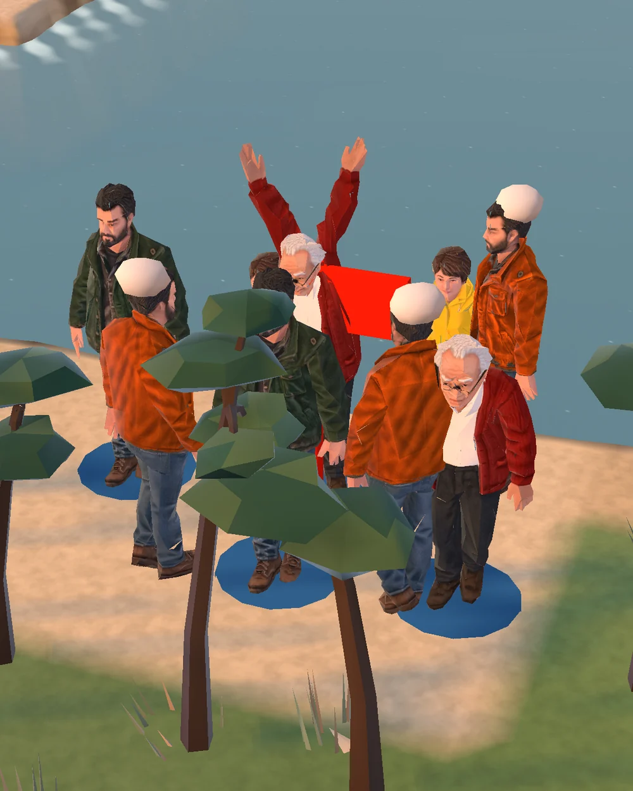

Fact sheet
Press
RESQ turns your table into a small world in trouble. Each valley faces one danger it can see coming: a flood, a wildfire, an avalanche, a turning tide, a lava flow. You place barriers, bridges, pumps and boats with your hands, route each group to safety, and watch the plan play out. Residents can’t be picked up and carried; the only way to save them is a good plan.
- Title
- RESQ
- Developer
- Amir Lotfy
- Platform
- Meta Quest 3 and Quest 3S (mixed reality)
- Genre
- Rescue strategy / puzzle
- Status
- In development for the Meta VR Start Developer Competition 2026. Not yet released.
- Content
- 5 worlds, 25 missions, 30 challenge variants
- Input
- Hand tracking (two hands or one), head-gaze dwell; no controllers needed
- Made with
- Unity 6, Meta XR SDK (Core, Interaction, MR Utility Kit), Blender
Images
Renders of the development build in the Unity Editor. Cut-outs have transparent backgrounds. A headset trailer follows after device testing.
 Alder Valley, cut-out
Alder Valley, cut-out Emberwood, cut-out
Emberwood, cut-out Frostline, cut-out
Frostline, cut-out Tidemark, cut-out
Tidemark, cut-out Cinder Reach, cut-out
Cinder Reach, cut-out Alder Valley, detail
Alder Valley, detail Emberwood, detail
Emberwood, detail Frostline, detail
Frostline, detail
Tidemark, detail Cinder Reach, detail
Cinder Reach, detail Forecast while placing a barrier
Forecast while placing a barrier Routing a boat to a waiting group
Routing a boat to a waiting group Results after a rescue
Results after a rescue Choosing a mission
Choosing a mission